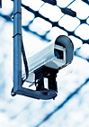

+7 (929) 042-96-78
+7 (929) 042-96-78
Системы видеонаблюдения:
- аналоговым
- цифровым
- проводным
- беспроводным
- автомобильным
- с IP-видеокамерами
- с отслеживанием через интернет
- отдельными услугами
- в комплексе с другими охранными и пожарными системами
-
Наша компания в данной области безопасности осуществляет проекты сборки, монтаж, настройку, обслуживание оборудования видеонаблюдения для обеспечения безопасности в банках, магазинах, на наземных и подземных автостоянках, прочих объектах жилого, гражданского либо промышленного назначения. Видеонаблюдение позволяет круглосуточно контролировать движение на охраняемой территории, автоматически записывать видео и сохранять его в архиве. Установка производится профессиональными специалистами по проекту с соблюдением всех норм и правил. После работы по установке системы, специалисты оптимизируют систему записи каждой камеры под Ваши требования, а также последующая техническая поддержка и гарантийное и постгарантийное обслуживание.
Оставьте заявку на разработку проекта и монтаж, коротко описав сложности:
отправить заявку
Разновидности видеонаблюдения Комплексное видеонаблюдение бывает:
Выбор того или иного оснащения зависит от характеристик сооружений, а также финансовой целесообразности. Учитываются площадь охраняемой территории, ее открытость, количество камер, их удаленность от пульта управления, необходимое разрешение картинки, другие критерии. Для обеспечения полноценной видеофиксации у нас чаще всего заказывают конфигурации аналоговых, цифровых, IP- камер.
Установка камер на охраняемой территории объекта Выполняем профессиональный комплекс услуг с настройкой наружного или внутреннего видеонаблюдения на паркингах, в промышленных и гражданских зданиях, частном секторе, квартирах многоэтажных домов:
В зависимости от условий и пожеланий заказчика мы устанавливаем стационарные, поворотные, черно-белые, цветные, инфракрасные видеокамеры. На крупных предприятиях внедряем многоуровневое наблюдение с локальным доступом. В структуру могут быть дополнительно включены датчики движения.
Для выполнения монтажа, настройки или обслуживания систем видео безопасности позвоните нам по телефону +7 (831) 282-16-92 или отправьте заявку на электронную почту
В ближайшее время наш сотрудник выедет по указанному адресу. Ориентировочные цены на работы и услуги представлены в таблице. Полная стоимость работ и сроки их выполнения рассчитываются после обследования объекта. На оборудование выдается гарантия.
На любом этапе возможно расширение, смена конфигурации или усовершенствование систем.